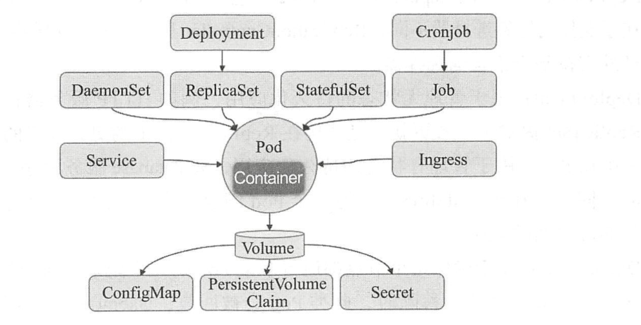
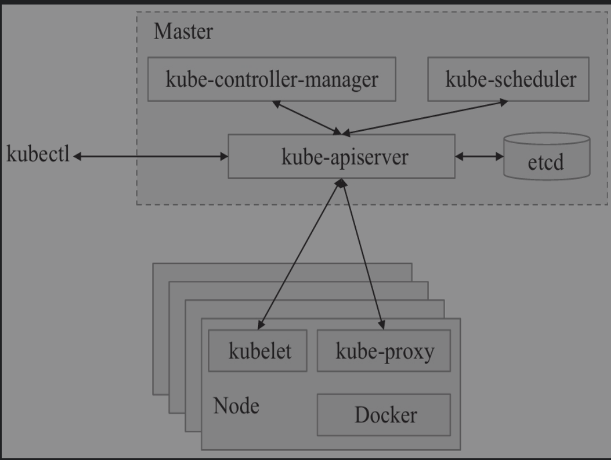
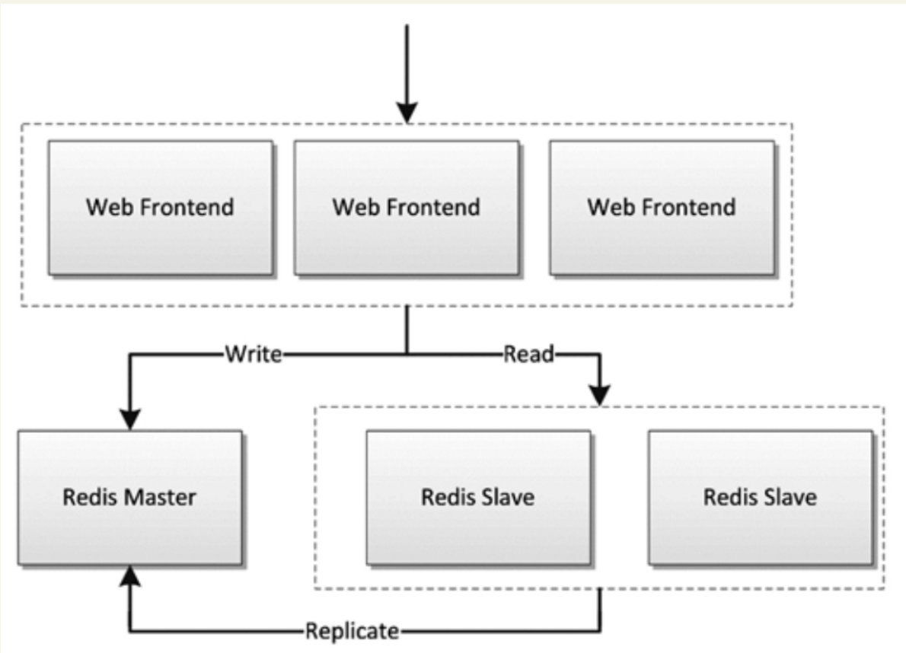
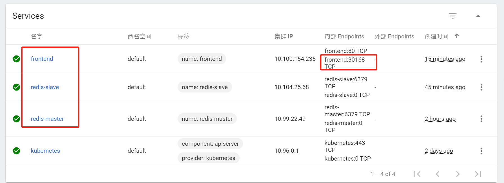
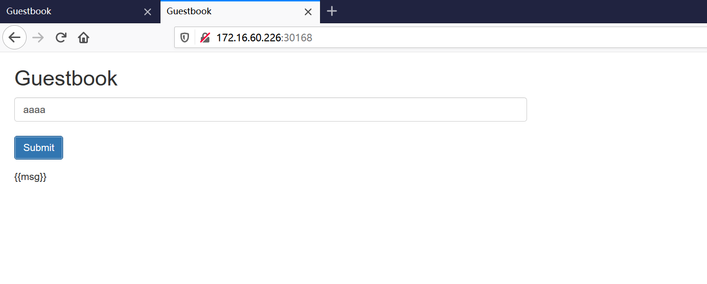

Contents
Kubernetes基础¶
Kubernetes致力于提供跨主机集群的自动部署、扩展、高可用以及运行应用程序容器的平台，其遵循主从式架构设计，其组件可以分为管理单个节点（Node）组件和控制平面组件。Kubernetes Master是集群的主要控制单元，用于管理其工作负载并指导整个系统的通信。Kubernetes控制平面由各自的进程组成，每个组件都可以在单个主节点上运行，也可以在支持高可用集群的多个节点上运行。
Kubernetes集群的两种管理角色：Master和Node。
1. Master节点¶
Master节点是Kubernetes集群的控制节点，在生产环境中不建议部署集群核心组件外的任何Pod，公司业务的Pod更是不建议部署到Master节点上，以免升级或者维护时对业务造成影响。Master节点的组件包括：
1.1 APIServer¶
APIServer是整个集群的控制中枢，提供集群中各个模块之间的数据交换，并将集群状态和信息存储到分布式键－值（key-value）存储系统Etcd集群中。同时它也是集群管理、资源配额、提供完备的集群安全机制的入口，为集群各类资源对象提供增删改查以及watch的REST API接口。
APIServer作为Kubernetes的关键组件，使用Kubernetes API和JSON overHTTP提供Kubernetes的内部和外部接口。
1.2 Scheduler¶
Scheduler是集群Pod的调度中心，主要是通过调度算法将Pod分配到最佳的节点（Node），它通过APIServer监听所有Pod的状态，一旦发现新的未被调度到任何Node节点的Pod（PodSpec.NodeName为空），就会根据一系列策略选择最佳节点进行调度，对每一个Pod创建一个绑定（binding），然后被调度的节点上的Kubelet负责启动该Pod。Scheduler是集群可插拔式组件，它跟踪每个节点上的资源利用率以确保工作负载不会超过可用资源。因此Scheduler必须知道资源需求、资源可用性以及其他约束和策略，例如服务质量、亲和力／反关联性要求、数据位置等。Scheduler将资源供应与工作负载需求相匹配以维持系统的稳定和可靠，因此Scheduler在调度的过程中需要考虑公平、资源高效利用、效率等方面的问题。
1.3 Controller Manager¶
Controller Manager是集群状态管理器（它的英文直译名为控制器管理器），以保证Pod或其他资源达到期望值。
当集群中某个Pod的副本数或其他资源因故障和错误导致无法正常运行，没有达到设定的值时，Controller Manager会尝试自动修复并使其达到期望状态。
Controller Manager包含NodeController、ReplicationController、EndpointController、NamespaceController、ServiceAccountController、ResourceQuotaController、ServiceController和TokenController，该控制器管理器可与API服务器进行通信以在需要时创建、更新或删除它所管理的资源，如Pod、服务断点等。
1.4 Etcd¶
Etcd由CoreOS开发，用于可靠地存储集群的配置数据，是一种持久性、轻量型、分布式的键－值（key-value）数据存储组件。
Etcd作为Kubernetes集群的持久化存储系统，集群的灾难恢复和状态信息存储都与其密不可分，所以在Kubernetes高可用集群中，Etcd的高可用是至关重要的一部分，在生产环境中建议部署为大于3的奇数个数的Etcd，以保证数据的安全性和可恢复性。Etcd可与Master组件部署在同一个节点上，大规模集群环境下建议部署在集群外，并且使用高性能服务器来提高Etcd的性能和降低Etcd同步数据的延迟。
2.Node节点¶
Node节点也被称为Worker或Minion，是主要负责部署容器（工作负载）的单机（或虚拟机），集群中的每个节点都必须具备容器的运行环境（runtime），比如Docker及其他组件等。Kubelet作为守护进程运行在Node节点上，负责监听该节点上所有的Pod，同时负责上报该节点上所有Pod的运行状态，确保节点上的所有容器都能正常运行。当Node节点宕机（NotReady状态）时，该节点上运行的Pod会被自动地转移到其他节点上。
Node节点包括：
2.1 Kubelet¶
负责与Master通信协作，管理该节点上的Pod。
2.2 Kube-Proxy¶
负责各Pod之间的通信和负载均衡。
2.3 Docker Engine¶
Docker引擎，负载对容器的管理。
3.小结¶
# 查看集群中有多少个Node
$ kubectl get nodes
NAME STATUS AGE
127.0.0.1 Ready 1d
#通过kubectl describe node 来查看某个Node的详细信息
$ kubectl describe node 127.0.0.1
4. kubernetes的资源对象¶
kubernetes常用资源对象
无状态的应用程序使用的Pod控制器
[STRIKEOUT:ReplicationController] （已经几乎废弃，被ReplicaSet和Deployment代替）
ReplicaSet
Deployment
有状态的应用程序使用的Pod控制器
StatefulSet
集群的存储守护进程
DaemonSet
确保每个节点都运行了pod的一个副本，新增的节点也会被添加此类Pod，节点被移除之后，也会对Pod进行回收。
DaemonSet常用于运行集群存储守护进程。如glusterd和ceph
日志收集进程–fluentd和logstash。
监控进程– prometheus的Node Exporter、Ingress等
4.1 查看k8s资源对象字段对照表¶
$ kubectl explain deploy --recursive=true
$ kubectl explain pod --recursive=true
$ kubectl explain server --recursive=true
4.2 通过web界面配置k8s的yaml文件¶
4.3 基于图形化的方式自动生成yaml¶
本次采用Ratel自动生成yaml文件。
Ratel安装文档：https://github.com/dotbalo/ratel-doc/blob/master/cluster/Install.md
5. 查询Kubernetes的健康状态¶
# kubectl cluster-info
Kubernetes master is running at https://172.16.60.236:6443
KubeDNS is running at https://172.16.60.236:6443/api/v1/namespaces/kube-system/services/kube-dns:dns/proxy
To further debug and diagnose cluster problems, use 'kubectl cluster-info dump'.
# kubectl -s https://172.16.60.236:6443 get componentstatuses
NAME STATUS MESSAGE ERROR
controller-manager Healthy ok
scheduler Healthy ok
etcd-0 Healthy {"health":"true"}
# kubectl -s https://172.16.60.236:6443 get node
NAME STATUS ROLES AGE VERSION
k8s-master Ready master 46h v1.18.3
k8s-node1 Ready <none> 45h v1.18.3
k8s-node2 Ready <none> 45h v1.18.3
k8s-node3 Ready <none> 45h v1.18.3
6. kubectl 常用命令总结¶
6.1 使用相关配置¶
# Kubectl自动补全
$ source <(kubectl completion zsh)
$ source <(kubectl completion bash)
# 显示合并后的 kubeconfig 配置
$ kubectl config view
# 获取pod和svc的文档
$ kubectl explain pods,svc
# 查看集群健康状态
$ kubectl get cs
# 集群
kubectl get cs # 集群健康情况
kubectl cluster-info # 集群核心组件运行情况
kubectl get namespaces # 表空间名
kubectl version # 版本
kubectl api-versions # API
kubectl get events # 查看事件
kubectl get nodes #获取全部节点
kubectl delete node k8s2 #删除节点
kubectl rollout status deploy nginx-test
kubectl get deployment --all-namespaces
kubectl get svc --all-namespaces
# 状态查询
# 查看集群信息
kubectl cluster-info
systemctl status kube-apiserver
systemctl status kubelet
systemctl status kube-proxy
systemctl status kube-scheduler
systemctl status kube-controller-manager
systemctl status docker
# 查询api服务
kubectl get apiservice
6.1.1 调度配置¶
# 调度配置
kubectl cordon k8s-node # 标记 my-node 不可调度
kubectl drain k8s-node # 清空 my-node 以待维护
kubectl uncordon k8s-node # 标记 my-node 可调度
kubectl top node k8s-node # 显示 my-node 的指标度量
kubectl taint nodes foo dedicated=special-user:NoSchedule #如果该键和影响的污点（taint）已存在，则使用指定的值替换
6.1.2 配置导出¶
## 导出配置文件
#导出proxy
kubectl get ds -n kube-system -l k8s-app=kube-proxy -o yaml>kube-proxy-ds.yaml
#导出kube-dns
kubectl get deployment -n kube-system -l k8s-app=kube-dns -o yaml >kube-dns-dp.yaml
kubectl get services -n kube-system -l k8s-app=kube-dns -o yaml >kube-dns-services.yaml
#导出所有 configmap
kubectl get configmap -n kube-system -o wide -o yaml > configmap.yaml
6.2 创建资源对象¶
分步骤创建
# yaml
kubectl create -f xxx-rc.yaml
kubectl create -f xxx-service.yaml
# json
kubectl create -f ./pod.json
cat pod.json | kubectl create -f -
# yaml2json
kubectl create -f docker-registry.yaml --edit -o json
# 创建
kubectl create -f ./nginx.yaml # 创建资源
kubectl apply -f xxx.yaml #（创建+更新，可以重复使用）
kubectl create -f . # 创建当前目录下的所有yaml资源
kubectl create -f ./nginx1.yaml -f ./mysql2.yaml # 使用多个文件创建资源
kubectl create -f ./dir # 使用目录下的所有清单文件来创建资源
kubectl create -f https://git.io/vPieo # 使用 url 来创建资源
kubectl run -i --tty busybox --image=busybox # ----创建带有终端的pod
kubectl run nginx --image=nginx # 启动一个 nginx 实例
kubectl run mybusybox --image=busybox --replicas=5 #----启动多个pod
kubectl explain pods,svc # 获取 pod 和 svc 的文档
# 查看deployment的属性
$ kubectl explain deployment
KIND: Deployment
VERSION: apps/v1
一次性创建
kubectl create -f xxx-service.yaml -f xxx-rc.yaml
根据目录下所有的 yaml 文件定义内容进行创建
kubectl create -f <目录>
使用 url 来创建资源
kubectl create -f https://git.io/vPieo
6.3 查看资源对象¶
查看所有Node或Namespace对象¶
kubectl get nodes
kubectl get namespace
查看所有Pod对象¶
# 查看子命令帮助信息
kubectl get --help
# 列出默认namespace中的所有pod
kubectl get pods
# 列出所有namespace中的所有pod
kubectl get pods --all-namespaces
# 列出指定namespace中的所有pod
kubectl get pods --namespace=test
# 查看pods具体信息
kubectl get pods -o wide kubernetes-dashboard-76479d66bb-nj8wr --namespace=kube-system
# kubectl get支持以Go Template方式过滤出指定的信息，比如查询Pod的运行状态：
$ kubectl get pods my-pod --output=go-template --template={{.status.phase}}
Running
# 列出所有pod并显示详细信息
kubectl get pods -o wide
kubectl get replicationcontroller web
kubectl get -k dir/
kubectl get -f pod.yaml -o json
kubectl get rc/web service/frontend pods/web-pod-13je7
kubectl get pods/app-prod-78998bf7c6-ttp9g --namespace=test -o wide
kubectl get -o template pod/web-pod-13je7 --template={{.status.phase}}
# 列出该namespace中的所有pod包括未初始化的
kubectl get pods,rc,services --include-uninitialized
查看所有RC对象¶
kubectl get rc
查看所有Deployment对象¶
# 查看default下的deployment
kubectl get deployment
# 获取所有deployment
kubectl get deployment --all-namespaces
# 列出指定deployment
kubectl get deployment my-app
# 查看kube-system namespace下面的pod/svc/deployment 等等（-o wide 选项可以查看存在哪个对应的节点）
kubectl get pod,svc,deployment -n kube-system
# 查看rc和servers
# 其他控制器类似吧，就是kubectl get 控制器 控制器具体名称
kubectl get rc,services
查看所有Service对象¶
kubectl get svc
kubectl get service
查看不同Namespac下的Pod 对象¶
kubectl get pods -n default
kubectl get pods --all-namespace
查询¶
# 查看nodes节点
kubectl get nodes
# 通过yaml文件查询
kubectl get -f xxx-yaml/
# 查询全部类型
kubectl get all
# 查询资源
kubectl get resourcequota
# endpoints端
kubectl get endpoints
# 查看pods
# 查看指定空间`kube-system`的pods
kubectl get po -n kube-system
# 查看所有空间的
kubectl get pods -o wide --all-namespaces
# 其他的写法
kubectl get pod -o wide --namespace=kube-system
# 获取svc
kubectl get svc --all-namespaces
# 其他写法
kubectl get services --all-namespaces
# 通过lable查询
kubectl get pods -l app=nginx -o yaml|grep podIP
# 当我们发现一个pod迟迟无法创建时，描述一个pods
kubectl describe pod xxx
# 查询事件
kubectl get events --all-namespaces
6.4 查看资源描述¶
显示Pod详细信息¶
kubectl describe pods/nginx
kubectl describe pods my-pod
kubectl describe -f pod.json
查看Node详细信息¶
kubectl describe nodes c1
查看RC关联的Pod信息¶
kubectl describe pods <rc-name>
6.5 更新修补资源¶
滚动更新¶
# 滚动更新 pod frontend-v1
kubectl rolling-update frontend-v1 -f frontend-v2.json
# 更新资源名称并更新镜像
kubectl rolling-update frontend-v1 frontend-v2 --image=image:v2
# 更新 frontend pod 中的镜像
kubectl rolling-update frontend --image=image:v2
# 退出已存在的进行中的滚动更新
kubectl rolling-update frontend-v1 frontend-v2 --rollback
# 强制替换; 删除后重新创建资源; 服务会中断
kubectl replace --force -f ./pod.json
# 添加标签
kubectl label pods my-pod new-label=awesome
# 添加注解
kubectl annotate pods my-pod icon-url=http://goo.gl/XXBTWq
# 重启deployment
kubectl rollout restart deploy/traefik-ingress-controller -n kube-system
# 更新
kubectl rolling-update python-v1 -f python-v2.json # 滚动更新 pod frontend-v1
kubectl rolling-update python-v1 python-v2 --image=image:v2 # 更新资源名称并更新镜像
kubectl rolling-update python --image=image:v2 # 更新 frontend pod 中的镜像
kubectl rolling-update python-v1 python-v2 --rollback # 退出已存在的进行中的滚动更新
cat pod.json | kubectl replace -f - # 基于 stdin 输入的 JSON 替换 pod
# 为 nginx RC 创建服务，启用本地 80 端口连接到容器上的 8000 端口
kubectl expose rc nginx --port=80 --target-port=8000
# 更新单容器 pod 的镜像版本（tag）到 v4
kubectl get pod nginx-pod -o yaml | sed 's/\(image: myimage\):.*$/\1:v4/' | kubectl replace -f -
kubectl label pods nginx-pod new-label=awesome # 添加标签
kubectl annotate pods nginx-pod icon-url=http://goo.gl/XXBTWq # 添加注解
kubectl autoscale deployment foo --min=2 --max=10 # 自动扩展 deployment “foo”
滚动¶
# 升级
kubectl apply -f xxx.yaml --record
# 回滚
kubectl rollout undo deployment javademo
# 查看滚动升级记录
kubectl rollout history deployment {名称}
修补资源¶
# 部分更新节点
kubectl patch node k8s-node-1 -p '{"spec":{"unschedulable":true}}'
# 更新容器镜像；spec.containers[*].name 是必须的，因为这是合并的关键字
kubectl patch pod valid-pod -p \
'{"spec":{"containers":[{"name":"kubernetes-serve-hostname","image":"new image"}]}}'
Scale 动态伸缩资源¶
# Scale a replicaset named 'foo' to 3
kubectl scale --replicas=3 rs/foo
# Scale a resource specified in "foo.yaml" to 3
kubectl scale --replicas=3 -f foo.yaml
# If the deployment named mysql's current size is 2, scale mysql to 3
kubectl scale --current-replicas=2 --replicas=3 deployment/mysql
# Scale multiple replication controllers
kubectl scale --replicas=5 rc/foo rc/bar rc/baz
# 动态伸缩pod
kubectl scale --replicas=3 rs/foo # 将foo副本集变成3个
kubectl scale --replicas=3 -f foo.yaml # 缩放“foo”中指定的资源。
kubectl scale --current-replicas=2 --replicas=3 deployment/mysql # 将deployment/mysql从2个变成3个
kubectl scale --replicas=5 rc/foo rc/bar rc/baz # 变更多个控制器的数量
kubectl rollout status deploy deployment/mysql # 查看变更进度
扩展¶
# 扩展副本
kubectl scale rc xxxx --replicas=3
kubectl scale rc mysql --replicas=1
kubectl scale --replicas=3 -f foo.yaml
其他¶
# 创建和删除
kubectl create -f dashboard-controller.yaml
kubectl delete -f dashboard-dashboard.yaml
# 替换&&应用
kubectl apply -f xxx.yaml
kubectl replace -f xxx.yaml
# 查看指定pods的环境变量
kubectl exec xxx env
# 判断dns是否通
kubectl exec busybox -- nslookup kube-dns.kube-system
# kube-proxy状态
systemctl status kube-proxy -l
# token的
kubectl get serviceaccount/kube-dns --namespace=kube-system -o yaml|grep token
6.6 删除资源对象¶
基于 xxx.yaml 文件删除 Pod 对象¶
# yaml文件名字按照你创建时的文件一致
kubectl delete -f xxx.yaml
删除包括某个 label 的 pod 对象¶
kubectl delete pods -l name=<label-name>
删除包括某个 label 的 service 对象¶
kubectl delete services -l name=<label-name>
删除包括某个 label 的 pod 和 service 对象¶
kubectl delete pods,services -l name=<label-name>
删除所有 pod/services 对象¶
kubectl delete pods --all
kubectl delete service --all
kubectl delete deployment --all
# 删除
kubectl delete pod -l app=flannel -n kube-system # 根据label删除：
kubectl delete -f ./pod.json # 删除 pod.json 文件中定义的类型和名称的 pod
kubectl delete pod,service baz foo # 删除名为“baz”的 pod 和名为“foo”的 service
kubectl delete pods,services -l name=myLabel # 删除具有 name=myLabel 标签的 pod 和 serivce
kubectl delete pods,services -l name=myLabel --include-uninitialized # 删除具有 name=myLabel 标签的 pod 和 service，包括尚未初始化的
kubectl -n my-ns delete po,svc --all # 删除 my-ns namespace下的所有 pod 和 serivce，包括尚未初始化的
kubectl delete pods prometheus-7fcfcb9f89-qkkf7 --grace-period=0 --force 强制删除
kubectl delete deployment kubernetes-dashboard --namespace=kube-system
kubectl delete svc kubernetes-dashboard --namespace=kube-system
kubectl delete -f kubernetes-dashboard.yaml
kubectl replace --force -f ./pod.json # 强制替换，删除后重新创建资源。会导致服务中断。
删除所有pod¶
# 删除所有pods
kubectl delete pods --all
# 删除所有包含某个lable的pod和serivce
kubectl delete pods,services -l name=<lable-name>
# 删除ui server,然后重建
kubectl delete deployments kubernetes-dashboard --namespace=kube-system
kubectl delete services kubernetes-dashboard --namespace=kube-system
# 强制删除部署
kubectl delete deployment kafka-1
# 删除rc
kubectl delete rs --all && kubectl delete rc --all
## 强制删除Terminating状态的pod
kubectl delete deployment kafka-1 --grace-period=0 --force
6.7 编辑资源文件¶
在编辑器中编辑任何 API 资源
# 编辑名为docker-registry的service
kubectl edit svc/docker-registry
6.8 直接执行命令¶
在寄主机上，不进入容器直接执行命令
执行 pod 的 date 命令，默认使用 pod 的第一个容器执行¶
kubectl exec mypod -- date
kubectl exec mypod --namespace=test -- date
指定 pod 中某个容器执行 date 命令¶
kubectl exec mypod -c ruby-container -- date
进入某个容器¶
kubectl exec mypod -c ruby-container -it -- bash
kubectl run -i --tty busybox --image=busybox -- sh # 交互式 shell 的方式运行 pod
# 或
kubectl run client --image=busybox --restart=Never -it -- /bin/sh
kubectl run cirros-$RANDOM --rm -it --image=cirros -- sh
kubectl attach nginx-pod -i # 连接到运行中的容器
kubectl port-forward nginx-pod 5000:6000 # 转发 pod 中的 6000 端口到本地的 5000 端口
kubectl exec nginx-pod -- ls / # 在已存在的容器中执行命令（只有一个容器的情况下）
kubectl exec nginx-pod -c my-container -- ls / # 在已存在的容器中执行命令（pod 中有多个容器的情况下）
kubectl top pod POD_NAME --containers # 显示指定 pod和容器的指标度量
kubectl exec -ti podName /bin/bash # 进入pod
kubectl exec -it pod/grafana-98bc68fc-6dqv8 -c grafana -n monitoring -- grafana-cli plugins install grafana-piechart-panel #为grafana安装插件
6.9 查看容器日志¶
直接查看日志¶
# 不实时刷新kubectl logs mypod
kubectl logs mypod --namespace=test
# 查看pod日志
kubectl logs $POD_NAME
查看日志实时刷新¶
kubectl logs -f mypod -c ruby-containe
查看日志¶
# 查看指定镜像的日志
kubectl logs -f kube-dns-699984412-vz1q6 -n kube-system
kubectl logs --tail=10 nginx
#指定其中一个查看日志
kubectl logs kube-dns-699984412-n5zkz -c kubedns --namespace=kube-system
kubectl logs kube-dns-699984412-vz1q6 -c dnsmasq --namespace=kube-system
kubectl logs kube-dns-699984412-mqb14 -c sidecar --namespace=kube-system
# 看日志
journalctl -f
6.10 常用操作总结¶
# 查看所有 pod 列表, -n 后跟 namespace, 查看指定的命名空间
kubectl get pod
kubectl get pod -n kube
kubectl get pod -o wide
# 重启Kubernetes Pod的几种方式
#方法1
kubectl scale deployment XXXX --replicas=0 -n {namespace}
kubectl scale deployment XXXX --replicas=1 -n {namespace}
#方法2
kubectl delete pod {podname} -n {namespace}
#方法3
kubectl get pod {podname} -n {namespace} -o yaml | kubectl replace --force -f -
#方法4
#Kubernetes 1.15开始才有
kubectl rollout restart deploy {your_deployment_name}
#在 Kubernetes 中，可以通过 kubectl 的 scale 命令控制 Deployment 资源缩成 0 个副本，然后再扩展成 1 个副本，这样 Pod 会被先删除，再进行重启，执行的命令如下:
## 缩放副本到 0 使 Grafana Pod 关闭
$ kubectl scale deployment grafana --replicas=0 -n kube-system
## 扩展副本到 1 使 Grafana Pod 启动
$ kubectl scale deployment grafana --replicas=1 -n kube-system
# 查看 RC 和 service 列表， -o wide 查看详细信息
kubectl get rc,svc
kubectl get pod,svc -o wide
kubectl get pod <pod-name> -o yaml
# 显示 Node 的详细信息
kubectl describe node 192.168.0.212
# 显示 Pod 的详细信息, 特别是查看 pod 无法创建的时候的日志
kubectl describe pod <pod-name>
eg:
kubectl describe pod redis-master-tqds9
# 根据 yaml 创建资源, apply 可以重复执行，create 不行
kubectl create -f pod.yaml
kubectl apply -f pod.yaml
# 基于 pod.yaml 定义的名称删除 pod
kubectl delete -f pod.yaml
# 删除所有包含某个 label 的pod 和 service
kubectl delete pod,svc -l name=<label-name>
# 删除所有 Pod
kubectl delete pod --all
# 查看 endpoint 列表
kubectl get endpoints
# 执行 pod 的 date 命令
kubectl exec <pod-name> -- date
kubectl exec <pod-name> -- bash
kubectl exec <pod-name> -- ping 10.24.51.9
# 通过bash获得 pod 中某个容器的TTY，相当于登录容器
kubectl exec -it <pod-name> -c <container-name> -- bash
eg:
kubectl exec -it redis-master-cln81 -- bash
# 查看容器的日志
kubectl logs <pod-name>
kubectl logs -f <pod-name> # 实时查看日志
kubectl log <pod-name> -c <container_name> # 若 pod 只有一个容器，可以不加 -c
kubectl logs -l app=frontend # 返回所有标记为 app=frontend 的 pod 的合并日志。
# 查看注释
kubectl explain pod
kubectl explain pod.apiVersion
# 查看节点 labels
kubectl get node --show-labels
# 重启 pod
kubectl get pod <POD名称> -n <NAMESPACE名称> -o yaml | kubectl replace --force -f -
# 重启deployment
kubectl rollout restart deploy/traefik-ingress-controller -n kube-system
# 修改网络类型
kubectl patch service istio-ingressgateway -n istio-system -p '{"spec":{"type":"NodePort"}}'
# 伸缩 pod 副本
# 可用于将Deployment及其Pod缩小为零个副本，实际上杀死了所有副本。当您将其缩放回1/1时，将创建一个新的Pod，重新启动您的应用程序。
kubectl scale deploy/nginx-1 --replicas=0
kubectl scale deploy/nginx-1 --replicas=1
# 查看前一个 pod 的日志，logs -p 选项
kubectl logs --tail 100 -p user-klvchen-v1.0-6f67dcc46b-5b4qb > pre.log
6.11 k8s容器数据拷贝¶
[root@k8s-master1 ~]# kubectl get pod
NAME READY STATUS RESTARTS AGE
web-5c987b8447-6b6bx 1/1 Running 0 3d20h
[root@k8s-master1 ~]# kubectl cp ./temp web-5c987b8447-6b6bx:/tmp
7. kubectl命令与资源管理¶
Kubernetes API是管理各种资源对象的唯一入口，它提供了一个RESTful风格的CRUD（Create、Read、Update和Delete）接口用于查询和修改集群状态，并将结果存储在集群状态存储系统etcd中。事实上，API Server也是用于更新etcd中资源对象状态的唯一途径，Kubernetes的其他所有组件和客户端都要通过它完成查询或修改操作。
7.1 资源管理的操作¶
Kubernetes API资源管理的操作可简单归结为增、删、改、查这4种，
kubectl提供了一系列子命令用于执行此类任务，例如create、delete、patch、apply、replace、edit、get等。
7. 1.1 kubectl命令常用操作示例¶
1.1.1 创建资源对象¶
# 新增
$ kubectl create namespace dev
# --dry-run可用于命令的测试运行，但并未真正执行资源对象的创建过程
$ kubectl run myapp --image=ikubernetes/myapp:v1 --port=80 --replicas=1 --dry-run
# 确认测试命令无误后，可移除“--dry-run”选项后再次执行命令以完成资源对象的创建
$ kubectl run myapp --image=ikubernetes/myapp:v1 --port=80 --replicas=1
$ kubectl create deployment demoapp --image="ikubernetes/demoapp:v1.0" -n dev deployment.apps/demoapp created
$ kubectl create service clusterip demoapp --tcp=80 -n dev
## 创建一个用于测试的pod
kubectl run client --rm -it --image=busybox --restart=Never -- /bin/sh
## 创建一个用于测试的pod
# CirrOS是设计用来进行云计算环境测试的Linux微型发行版，它拥有HTTP客户端工具curl等。
kubectl run cirros-$RANDOM --rm -it --image=cirros -- bash
kubectl run cirros-$RANDOM --rm -it --image=cirros -- sh
#创建 deployment模板
kubectl create deployment nginx --image=nginx --dry-run -o yaml > deployment.yaml
#启动nginx pod
kubectl apply -f deployment.yaml
# 创建service资源
kubectl expose deployment nginx --port=80 --target-port=80 --type=NodePort --dry-run -o yaml > service.yaml
# 启动service服务
kubectl apply -f service.yaml
#例如下面的命令分别创建了名为nginx-deploy的Deployment控制器资源对象，以及名为nginx-svc的Service资源对象：
$ kubectl run nginx-deploy --image=nginx:1.12 --replicas=2
$ kubectl expose deployment/nginx --name=nginx-svc --port=80
# 查询
$ kubectl get deployment -n dev
$ kubectl get pod -n dev -o wide
$ kubectl get svc -n dev
# 删除
$ kubectl delete deployment demoapp -n dev
$ kubectl delete svc demoapp -n dev
$ kubectl delete ns dev
将资源导出为命令配置文件
# 打印并导出资源对象的详细信息
$ kubectl get pod metrics-server-7477b75789-xlx4b -n kube-system -o yaml
#查看kube-system名称空间中拥有标签component=kube-apiserver的Pod对象的资源配置清单（期望的状态）及当前的状态信息，并输出为yaml格式，
$ kubectl get pods-l component=kube-apiserver-o yaml-n kube-system
# 导出资源对象的详细信息
$ kubectl get ns dev -o yaml > dev-ns.yaml
$ kubectl get pod -n dev -o yaml > demo-pod.yaml
$ kubectl get service -n dev -o yaml > demo-svc.yaml
使用命令式对象配置文件方式创建部署
$ ll
total 16
-rw-r--r-- 1 root root 5349 Apr 2 10:47 demo-pod.yaml
-rw-r--r-- 1 root root 1189 Apr 2 10:47 demo-svc.yaml
$ kubectl create ns dev
$ kubectl create -f demo-pod.yaml
$ kubectl create -f demo-svc.yaml
# 删除所有资源
kubectl delete -f example01/
$ kubectl create ns dev
$ kubectl apply -f example01/
pod/demoapp-6c5d545684-bn5t8 created
service/demoapp created
$ kubectl delete ns dev
1.1.2 查看资源对象¶
1）kubectl describe：显示资源的详情，包括运行状态、事件等信息，但不同的资源类型其输出内容不尽相同。
2）kubectl logs：查看Pod对象中容器输出在控制台的日志信息。在Pod中运行有多个容器时，需要使用选项“-c”指定容器名称。
3）kubectl exec：在Pod对象某容器内运行指定的程序，其功能类似于“docker exec”命令，可用于了解容器各方面的相关信息或执行必需的设定操作等，其具体功能取决于容器内可用的程序。
# 查看资源对象
$ kubectl get namespaces
# 例如，列出默认名称空间内的所有Pod和Service对象，并输出额外信息
$ kubectl get pod,svc -o wide
# 下面的命令能够取出kube-system名称空间中带有k8s-app=kube-dns标签的Pod对象的资源名称。
$ kubectl get pods-l k8s-app-n kube-system
kubectl describe命令还能显示当前对象相关的其他资源对象，如Event或Controller等。
$ kubectl describe pod metrics-server-7477b75789-xlx4b -n kube-system
# 查看kube-system名称空间中拥有标签component=kube-apiserver的Pod对象的详细描述信息
$ kubectl describe pods-l component=kube-apiserver-n kube-system
打印容器中的日志信息
$ kubectl logs pod/demoapp -n dev
#例如，查看名称空间kube-system中仅有一个容器的Pod对象kube-apiserver-master.ilinux.io的日志
$ kubectl logs kube-apiserver-master.ilinux.io-n kube-system
-f”选项，还能用于持续监控指定容器中的日志输出
$ kubectl logs -f kube-apiserver-master.ilinux.io-n kube-system
1.1.3 使用yaml文件¶
使用和查看命令如下
$ kubectl apply -f .
deployment.apps/demoapp created
service/demoapp created
$ kubectl get pod,svc,ep -n dev
.....
yaml文件如下
demo-deployment.yaml
---
apiVersion: apps/v1
kind: Deployment
metadata:
labels:
k8s.kuboard.cn/layer: web
k8s.kuboard.cn/name: demoapp
name: demoapp
namespace: dev
spec:
replicas: 1
selector:
matchLabels:
k8s.kuboard.cn/layer: web
k8s.kuboard.cn/name: demoapp
template:
metadata:
labels:
k8s.kuboard.cn/layer: web
k8s.kuboard.cn/name: demoapp
spec:
containers:
- image: 'ikubernetes/demoapp:v1.0'
imagePullPolicy: Always
name: demoapp-pod
dnsPolicy: ClusterFirst
restartPolicy: Always
demo-svc.yaml
---
apiVersion: v1
kind: Service
metadata:
labels:
k8s.kuboard.cn/layer: web
k8s.kuboard.cn/name: demoapp
name: demoapp
namespace: dev
spec:
externalTrafficPolicy: Cluster
ports:
- name: dijebj
nodePort: 30001
port: 8080
protocol: TCP
targetPort: 80
selector:
k8s.kuboard.cn/layer: web
k8s.kuboard.cn/name: demoapp
type: NodePort
1.1.4 在容器中执行命令¶
$ kubectl exec -it demoapp-5f8989b6c5-hpq9w -- sh -n dev
$ kubectl exec kube-apiserver-master.ilinux.io-n kube-system --ps
#注意，若Pod对象中存在多个容器，则需要以-c选项指定容器后再运行。
kubectl exec -it cigiteebe-6f998dc5-n2jvp -c cigiteebe -n ci-gitee-release -- bash
1.1.5 删除资源¶
$ kubectl delete svc demoapp -n dev
$ kubectl delete deployment demoapp -n dev
$ kubectl delete ns dev
# 删除kube-system名称空间中拥有标签“k8s-app=kube-proxy”的所有Pod对象
$kubectl delete pods-l app=monitor-n kube-system
# 删除命名空间中的所有pod对象
$ kubectl delete pods --all -n kube-public
# 强制删除pod对象
$ kubectl delete pods demoapp --force --grace-period=0
需要特别说明的是，对于受控于控制器的对象来说，仅删除受控对象自身，其控制器可能会重建出类似的对象，例如Deployment控制器下的Pod对象被删除时即会被重建。
强制删除terminating状态的资源
参考文献
https://www.cnblogs.com/Dev0ps/p/12642501.html
https://www.cnblogs.com/Dev0ps/p/10888815.html
k8s强制删除 namespace
https://xibolun.github.io/post/k8s/k8s%E5%88%A0%E9%99%A4namespace/
强制删除namespace，有时kubectl delete删除会删不掉
kubectl get namespace tigera-operator -o json \
| tr -d "\n" | sed "s/\"finalizers\": \[[^]]\+\]/\"finalizers\": []/" \
| kubectl replace --raw /api/v1/namespaces/tigera-operator/finalize -f -
1.1.6 常用的清理Kubernetes集群资源命令¶
7.2 kubectl插件¶
kubectl插件是指能够由kubectl调用的外部独立应用程序，这类应用程序都以kubectl-\(plugin_name格式命名，表现为kubectl的名字是\)plugin_name的子命令。例如，应用程序/usr/bin/kubectl-whoami就是whoami插件，我们可以使用kubectl whoami的格式来运行它。因此，可为kubectl插件添加新的可用子命令，丰富kubectl的功能。
Kubernetes SIG CLI社区还提供了一个插件管理器——Krew，它能够帮助用户打包、分发、查找、安装和管理kubectl插件，
项目地址为https://krew.sigs.k8s.io/。Krew以跨平台的方式打包和分发插件，因此单一打包格式即能适配主流的系统平台（Linux、Windows或macOS等）。为了便于插件分发，Krew还维护有一个插件索引，以方便用户发现主流的可用插件。
Krew自身也表现为kubectl的一个插件，需要以手动方式独立安装。下面的脚本（krew-install.sh）能自动完成Krew插件的安装，该脚本仅适用于类UNIX系统平台，并以bash解释器运行，其他平台上的部署方式请参考Krew项目的官方文档。
krew-install.sh
# 安装kubectl插件krew
curl -fsSLO "https://storage.googleapis.com/krew/v0.2.1/krew.{tar.gz,yaml}"
tar zxvf krew.tar.gz
./krew-linux_amd64 install --manifest=krew.yaml --archive=krew.tar.gz
echo "export PATH=\"\${KREW_ROOT:-\$HOME/.krew}/bin:\$PATH\"" >>/etc/profile
source /etc/profile
# 更新插件列表
kubectl krew update
# 查看插件列表
kubectl krew list
编辑$HOME/.bash_profile文件，将export一行命令添加其中，并重启当前shell解释器。
[root@k8smaster1 krew]# echo 'export PATH="${PATH}:${HOME}/.krew/bin"' >> $HOME/.bash_profile
[root@k8smaster1 krew]# source $HOME/.bash_profile
[root@k8smaster1 krew]# exec $SHELL
设定完成后，kubectl krew子命令便能执行Krew插件管理器的相关功能，例如查找和安装所需要的插件，它拥有help、list、search、info、install、upgrade和uninstall等二级子命令。
下面的命令搜索Krew索引中包含字符串who的插件。
[root@k8smaster1 krew]# kubectl krew update
Updated the local copy of plugin index.
[root@k8smaster1 krew]# kubectl krew search who
NAME DESCRIPTION INSTALLED
view-webhook Visualize your webhook configurations no
who-can Shows who has RBAC permissions to access Kubern... no
whoami Show the subject that's currently authenticated... no
// 安装whoami插件
kubectl krew install whoami
kubectl krew install ns ctx rbac-view
// 使用插件
kubectl whoami
Krew索引中的各插件几乎都从更便捷、更丰富或更完整等角度进一步完善了kubectl功能。例如status能够以更加简便、直观的方式返回资源的简要状态，ctx以更便捷的方式完成kubeconfig中的context切换等。
kubectl 高效使用技巧
7.3 Kubernetes的扩展插件¶
安装Cluster DNS
参考文献：
kubectl部署应用 示例1¶
本章要演示的示例应用是一个名叫Guestbook的应用，Guestbook是一个典型的Web应用。Guestbook的部署运行结构如图所示。
Guestbook结构
Guestbook包含两部分。
Frontend
Guestbook的Web前端部分，无状态节点，可以方便伸缩，本例中将运行3个实例。
Redis
Guestbook的存储部分，Redis采用主备模式，即运行1个Redis Master和2个Redis Slave，Redis Slave会从Redis Master同步数据。
Guestbook提供一个非常简单的功能：在Frontend页面提交数据，Frontend则将数据保存到Redis Master，然后从Redis Slave读取数据显示到页面上。
Guestbook定义文件在Kubernetes发布包的examples/guestbook目录下：
$ wget https://github.com/kubernetes/kubernetes/releases/download/v1.1.1/kubernetes.tar.gz
$ tar zxvf kubernetes.tar.gz
$ cd kubernetes/examples/guestbook
运行Redis¶
首先在Kubernetes上部署运行Redis，包括Redis Master和Redis Slave。
创建Redis Master Pod¶
Redis Master Replication Controller的定义文件redis-master-controller.yaml：
apiVersion: v1
kind: ReplicationController
metadata:
name: redis-master
labels:
name: redis-master
spec:
replicas: 1
selector:
name: redis-master
template:
metadata:
labels:
name: redis-master
spec:
containers:
- name: master
image: redis
ports:
- containerPort: 6379
通过定义文件创建Redis Master Replication Controller：
$ kubectl create -f redis-master-controller.yaml
replicationcontroller "redis-master" created
创建成功后，可查询Redis Master Replication Controller：
$ kubectl get replicationcontroller redis-master
CONTROLLER CONTAINER(S) IMAGE(S) SELECTOR REPLICAS AGE
redis-master master redis name=redis-master 1 15s
Redis Master Replication Controller将会创建1个Redis Master Pod，创建出来的Pod就会带上Label name=redis-master：
$ kubectl get pod --selector name=redis-master
NAME READY STATUS RESTARTS AGE
redis-master-vdkfp 1/1 Running 0 31s
Replication Controller在创建出Pod以后，将会保证Pod按照指定副本数目持续运行，而通过Replication Controller也可以对Pod进行一系列操作，包括滚动升级和弹性伸缩等。
创建Redis Master Service¶
Kubernetes中Pod是变化的，特别是当受到Replication Controller控制的时候，而当Pod发生变化的时候，Pod的IP也是变化的。
这就导致了一个问题：在Kubernetes集群中，Pod之间如何互相发现并访问呢?比如我们已经运行了Redis Master Pod，那么Redis Slave Pod如何获取Redis Master Pod的访问地址呢？为此Kubernetes提供了Service来实现服务发现。
Kubernetes中Service是真实应用的抽象，将用来代理Pod，对外提供固定IP作为访问入口，这样通过访问Service便能访问到相应的Pod，而对访问者来说只需知道Service的访问地址，而不需要感知Pod的变化。
上一步中已经运行起Redis Master Pod，现在创建Redis Master Service来代理Redis Master Pod，Redis Master Service的定义文件redis-master-service.yaml：
apiVersion: v1
kind: Service
metadata:
name: redis-master
labels:
name: redis-master
spec:
ports:
# the port that this service should serve on
- port: 6379
targetPort: 6379
selector:
name: redis-master
Service是通过Label来关联Pod的，在Service的定义中，设置.spec.selector为name= redis-master，将关联上Redis Master Pod。
通过定义文件创建Redis Master Service：
$ kubectl create -f redis-master-service.yaml
service "redis-master" created
创建成功后查看Redis Master Service：
$ kubectl get service redis-master
NAME TYPE CLUSTER-IP EXTERNAL-IP PORT(S) AGE
redis-master ClusterIP 10.99.22.49 <none> 6379/TCP 11m
Redis Master Service的查询信息中显示属性CLUSTER_IP为 10.99.22.49，属性PORT(S)为6379/TCP，其中 10.99.22.49是Kubernetes分配给Redis Master Service的虚拟IP，6379/TCP则是Service会转发的端口（通过Service定义文件中的.spec.ports[0].port指定），Kubernetes会将所有访问 10.99.22.49:6379的TCP请求转发到Redis Master Pod中，目标端口是6379/TCP（通过Service定义文件中的spec.ports[0].targetPort指定）。
因为创建了Redis Master Service来代理Redis Master Pod，所以Redis Slave Pod通过Redis Master Service的虚拟IP 10.99.22.49就可以访问到Redis Master Pod，但是如果只是硬配置Service的虚拟IP到Redis Slave Pod中，这样还不是真正的服务发现，Kubernetes提供了两种发现Service的方法。
环境变量 当Pod运行的时候，Kubernetes会将之前存在的Service的信息通过环境变量写到Pod中，以Redis Master Service为例，它的信息会被写到Pod中：
REDIS_MASTER_SERVICE_HOST=10.99.22.49
REDIS_MASTER_PORT_6379_TCP_PROTO=tcp
REDIS_MASTER_SERVICE_PORT=6379
REDIS_MASTER_PORT=tcp://10.99.22.49
REDIS_MASTER_PORT_6379_TCP=tcp://10.99.22.49
REDIS_MASTER_PORT_6379_TCP_PORT=6379
REDIS_MASTER_PORT_6379_TCP_ADDR=10.99.22.49
这种方法要求Pod必须在Service之后启动，之前启动的Pod没有这些环境变量。采用DNS方式就没有这个限制。
DNS 当有新的Service创建时，就会自动生成一条DNS记录，以Redis Master Service为例，有一条DNS记录：
redis-master => 10.99.22.49
创建Redis Slave Pod¶
redisslave镜像Dockerfile下载链接地址
https://github.com/kubernetes/kubernetes/tree/v1.1.1/examples/guestbook/redis-slave
通过Replication Controller可创建Redis Slave Pod，将创建两个Redis Slave Pod。Redis Slave Replication Controller的定义文件redis-slave-controller.yaml：
apiVersion: v1
kind: ReplicationController
metadata:
name: redis-slave
labels:
name: redis-slave
spec:
replicas: 2
selector:
name: redis-slave
template:
metadata:
labels:
name: redis-slave
spec:
containers:
- name: worker
image: 1879324764/hjl-redisslave:v1
env:
- name: GET_HOSTS_FROM
value: dns
ports:
- containerPort: 6379
查看Pod信息
#通过自定义文件创建 Redis Slave Replication Controller
$ kubectl create -f redis-slave-controller.yaml
replicationcontroller/redis-slave created
#创建成功后，查询Redis Slave Replication Controller
$ kubectl get replicationcontroller redis-slave
NAME DESIRED CURRENT READY AGE
redis-slave 2 2 0 6s
#Redis Slave Replication Controller创建运行两个Redis Slave Pod
$ kubectl get pod --selector name=redis-slave
NAME READY STATUS RESTARTS AGE
redis-slave-dzdjc 1/1 Running 0 100s
redis-slave-qpzn4 1/1 Running 0 100s
创建Redis Slave Service¶
创建Redis Salve Service来代理Redis Salve Pod，Redis Salve Service的定义文件redis-slave-service.yaml：
apiVersion: v1
kind: Service
metadata:
name: redis-slave
labels:
name: redis-slave
spec:
ports:
# the port that this service should serve on
- port: 6379
selector:
name: redis-slave
查看service信息
# 通过定义文件创建Redis Salve Service
$ kubectl create -f redis-slave-service.yaml
service/redis-slave created
# 查询Redis Salve Service
$ kubectl get service redis-slave
NAME TYPE CLUSTER-IP EXTERNAL-IP PORT(S) AGE
redis-slave ClusterIP 10.109.114.132 <none> 6379/TCP 16s
运行Frontend¶
创建Frontend Pod¶
通过Frontend Replication Controller来创建Frontend Pod，将创建3个Frontend Pod。
gb-frontend:v3的Dockerfile下载链接
https://github.com/kubernetes/kubernetes/blob/v1.1.1/examples/guestbook/php-redis/Dockerfile
Frontend Replication Controller的定义文件frontend-controller.yaml：
apiVersion: v1
kind: ReplicationController
metadata:
name: frontend
labels:
name: frontend
spec:
replicas: 3
selector:
name: frontend
template:
metadata:
labels:
name: frontend
spec:
containers:
- name: php-redis
image: 1879324764/hjl-frontend:v3
env:
- name: GET_HOSTS_FROM
value: dns
ports:
- containerPort: 80
查看Pod信息
#通过自定义文件创建Frontend Replication Controller
$ kubectl create -f frontend-controller.yaml
replicationcontroller/frontend created
#创建成功后，查询Frontend Replication Controller
$ kubectl get replicationcontroller frontend
NAME DESIRED CURRENT READY AGE
frontend 3 3 0 18s
#Frontend Replication Controller创建运行3个Frontend Pod
$ kubectl get pod --selector name=frontend
NAME READY STATUS RESTARTS AGE
frontend-8bfcq 1/1 Running 0 2m51s
frontend-8c2cp 1/1 Running 0 2m51s
frontend-mflxl 1/1 Running 0 2m51s
创建Frontend Service¶
创建Frontend Service代理Frontend Pod，Frontend Service的定义文件frontend-service.yaml：
apiVersion: v1
kind: Service
metadata:
name: frontend
labels:
name: frontend
spec:
ports:
# the port that this service should serve on
- port: 80
selector:
name: frontend
查看service信息
# 通过定义文件创建Frontend Service
$ kubectl create -f frontend-service.yaml
service/frontend created
# 查询Frontend Service
$ kubectl get service frontend
NAME TYPE CLUSTER-IP EXTERNAL-IP PORT(S) AGE
frontend ClusterIP 10.98.214.195 <none> 80/TCP 10s
设置Guesbook外网访问¶
Service的虚拟IP是由Kubernetes虚拟出来的内部网络，而外部网络是无法寻址到的，这时候就需要增加一层网络转发，即外网到内网的转发。实现方式有很多种，我们这里采用一种叫作NodePort的方式来实现。即Kubernetes将会在每个Node上设置端口，称为NodePort，通过NodePort端口可以访问到Pod。
修改Frontend Service的定义文件frontend-service.yaml，设置spec.type为NodePort：
apiVersion: v1
kind: Service
metadata:
name: frontend
labels:
name: frontend
spec:
type: NodePort
ports:
- port: 80
selector:
name: frontend
查看service信息
# 重新创建Frontend Service
$ kubectl replace -f frontend-service.yaml --force
service/frontend replaced
# 查看frontend对外映射的端口
$ kubectl get service frontend
NAME TYPE CLUSTER-IP EXTERNAL-IP PORT(S) AGE
frontend NodePort 10.96.36.2 <none> 80:30610/TCP
查看所有的service信息¶
 清理Guestbook¶
清理Guestbook，只需要分别删除创建出的Replication Controller和Service：
$ kubectl delete replicationcontroller redis-master redis-slave frontend
replicationcontroller "redis-master" deleted
replicationcontroller "redis-slave" deleted
replicationcontroller "frontend" deleted
$ kubectl delete service redis-master redis-slave frontend
service "redis-master" deleted
service "redis-slave" deleted
service "frontend" deleted
kubectl部署应用 示例2¶
部署一个简单的Demo网站¶
1．编写Deployment对象的配置文件¶
我们定义一个简单的Deployment配置
deployment-demo.yaml
$ cat deployment-demo.yaml
#API对象版本，可通过“kubectl api-versions”命令查看
apiVersion: apps/v1
#资源类型，区分大小写，可通过“kubectl api-resources”命令查看，这里使用Deployment对象
kind: Deployment
#标准的元数据
metadata:
#当前Deployment对象名称，同一个命名空间下必须唯一
name: demo-deployment
#部署规范（目标），Deployment控制器会根据此模板调整当前Pod到最终的期望状态
spec:
# Pod数量，这里指运行2个Pod
replicas: 2
#选择器，其定义了Deployment控制器如何找到要管理的Pod
selector:
#匹配标签
matchLabels:
#待匹配的标签键值对
app: demo
template: # Pod模板定义
metadata: #标准的元数据
labels: #Pod标签
app: demo #定义Pod标签，由键值对组成
spec: #Pod规范
containers: #容器列表，Pod中至少有一个容器
- name: demo #容器名称
image: microsoft/dotnet-samples:aspnetapp #镜像地址
ports: #端口列表
- containerPort: 80 #设置容器端口
2．使用“kubectl create”执行资源创建¶
$ kubectl create -f deployment-demo.yaml
//检查部署对象是否已经创建、部署是否已经完成
$ kubectl get Deployment demo-deployment
NAME READY UP-TO-DATE AVAILABLE AGE
demo-deployment 2/2 2 2 87m
// 查看副本集（ReplicaSet）对象
$ kubectl get rs -lapp=demo
NAME DESIRED CURRENT READY AGE
demo-deployment-68b59dd5b8 2 2 2 87m
$ kubectl get rs -lapp=demo --show-labels
NAME DESIRED CURRENT READY AGE LABELS
demo-deployment-68b59dd5b8 2 2 2 88m app=demo,pod-template-hash=68b59dd5b8
3. 通过Service访问应用¶
正常可以访问pod的ip。
$ curl --head http://10.100.85.197
HTTP/1.1 200 OK
Date: Tue, 22 Dec 2020 08:44:20 GMT
Content-Type: text/html; charset=utf-8
Server: Kestrel
$ curl --head http://10.100.85.196
HTTP/1.1 200 OK
Date: Tue, 22 Dec 2020 08:44:32 GMT
Content-Type: text/html; charset=utf-8
Server: Kestrel
删除pod后会重建，此时pod的ip地址已经发生改变
$ kubectl delete pods -lapp=demo
pod "demo-deployment-68b59dd5b8-5gw7q" deleted
pod "demo-deployment-68b59dd5b8-hd9pm" deleted
$ kubectl get pods -lapp=demo -o wide
NAME READY STATUS RESTARTS AGE IP NODE NOMINATED NODE READINESS GATES
demo-deployment-68b59dd5b8-gtf45 1/1 Running 0 48s 10.100.85.200 k8s-node01 <none> <none>
demo-deployment-68b59dd5b8-r6c9s 1/1 Running 0 48s 10.100.85.199 k8s-node01 <none> <none>
3.1 通过ClusterIP Service在集群内部访问¶
clusterIPService.yaml
apiVersion: v1
kind: Service #资源类型
metadata: #标准元数据
name: demo-service #服务名称
spec: #规范定义
type: ClusterIP #服务类型，不填写此字段则默认为ClusterIP类型，也就是集群IP类型
selector: #标签选择器
app: demo #标签
ports: #端口
- protocol: TCP #协议，能够支持TCP和UDP
port: 80 #当前端口
targetPort: 80 #目标端口
执行Service的创建并分别查询Service和EndPoints
$ kubectl create -f clusterIPService.yaml
service/demo-service created
$ kubectl get svc demo-service -o wide
NAME TYPE CLUSTER-IP EXTERNAL-IP PORT(S) AGE SELECTOR
demo-service ClusterIP 10.96.212.33 <none> 80/TCP 12s app=demo
$ kubectl get endpoints demo-service -o wide
NAME ENDPOINTS AGE
demo-service 10.100.85.199:80,10.100.85.200:80 72s
我们可以在集群内部进行访问了。如下：
$ curl --head 10.96.212.33
HTTP/1.1 200 OK
Date: Tue, 22 Dec 2020 08:58:14 GMT
Content-Type: text/html; charset=utf-8
Server: Kestrel
3.2 通过NodePort Service在外部访问集群应用¶
nodePortService.yaml
kind: Service #资源类型
apiVersion: v1
metadata: #标准元数据
name: nodeport-service #服务名称
spec: #规范定义
type: NodePort #服务类型，这里是节点端口
ports: #端口列表
- port: 80 #Pod端口
nodePort: 31001 #节点端口，注意默认的端口范围为“30000-32767”，注意不要冲突
selector: #标签选择器
app: demo
执行Service的创建并分别查询Service和EndPoints
$ kubectl create -f nodePortService.yaml
service/nodeport-service created
$ kubectl get svc nodeport-service
NAME TYPE CLUSTER-IP EXTERNAL-IP PORT(S) AGE
nodeport-service NodePort 10.96.30.5 <none> 80:31001/TCP 11s
$ kubectl get svc
NAME TYPE CLUSTER-IP EXTERNAL-IP PORT(S) AGE
kubernetes ClusterIP 10.96.0.1 <none> 443/TCP 7h12m
nodeport-service NodePort 10.96.30.5 <none> 80:31001/TCP 20s
我们创建了名为“nodeport-service”的Service。该Service映射“31001”节点端口，并且创建了“10.96.30.5”的集群IP。也就是说，Service可以通过“节点IP：节点端口”或“集群IP（spec.clusterIp）：端口”进行访问。
虽然我们可以在外部访问集群中的应用，但是也可以看到该方案有不少不足之处：
（1）每个端口仅能支持一个服务，不能冲突。
（2）端口范围必须为“30000-32767”，非常不友好。
（3）如果节点IP发生变化，服务也将无法访问。
3.3 通过LoadBalancer Service在外部访问集群应用¶
LoadBalancer_Service.yaml
apiVersion: v1 #api版本
kind: Service #Service
metadata: #标准元数据
name: demo #名称
namespace: default #命名空间
spec: #规范
clusterIP: 10.3.255.28 #集群IP
loadBalancerIP: 106.52.99.55 #负载均衡IP
ports: #端口列表
- name: tcp-80-80
nodePort: 31504 #节点IP
port: 80 #Pod端口
protocol: TCP #协议
targetPort: 80 #服务端口
selector: #选择器
app: demo
k8s-app: demo
qcloud-app: demo
type: LoadBalancer #服务类型，这里为负载均衡服务类型
如上述定义所示，我们创建了Service，设置集群IP为“10.3.255.28”、负载均衡IP（loadBalancerIP）为“106.52.99.55”、节点端口为“31504”。Service定义好了以后对负载均衡服务进行配置：配置一个TCP监听器.
kubectl部署应用 示例3¶
使用示例镜像ikubernetes/demoapp:v1.0演示容器应用编排的基础操作：应用部署、访问、查看，服务暴露和应用扩缩容等。
Kubernetes之上应用程序的基础管理操作由如下几个部分组成:
1）通过合用的控制器类的资源（例如Deployment或ReplicationController）创建并管控Pod对象以运行特定的应用程序：
无状态（stateless）应用的部署和控制通常使用Deployment控制器
有状态应用则需要使用StatefulSet控制器或扩展的Operator。
2）为Pod对象创建Service对象，以便向客户端提供固定的访问端点，并能够借助KubeDNS进行服务发现。
3）随时按需获取各资源对象的简要或详细信息，以了解其运行状态。
4）如有需要，对支持扩缩容的应用按需进行扩容或缩容；
5）应用程序的镜像出现新版本时，对其执行更新操作，若相应的控制器支持，修改指定的控制器资源中Pod模板的容器镜像为指定的新版本即可自动触发更新过程。
下面示例仅演示的部分功能，即应用部署、访问、查看，以及服务暴露。
应用编排¶
1. 创建Deployment控制器对象¶
下面的命令会创建一个名为demoapp的Deployment控制器对象，它使用镜像ikubernetes/demoapp:v1.0创建Pod对象，但仅用于测试，运行后即退出。
[root@ci-base ~]# kubectl create deployment demoapp --image="ikubernetes/demoapp:v1.0" --dry-run=client
deployment.apps/demoapp created (dry run)
确认测试命令无误后，可在移除–dry-run选项后再次执行命令以完成资源对象的
[root@ci-base ~]# kubectl create deployment demoapp --image="ikubernetes/demoapp:v1.0"
deployment.apps/demoapp created
该命令创建的Deployment/demoapp对象会借助指定的镜像生成一个Pod，并自动为其添加app=demoapp标签，
而控制器对象自身也将使用该标签作为标签选择器。镜像ikubernetes/demoapp:v1.0中定义的容器主进程为默认监听于80端口的Web应用程序demoapp。
2.打印资源对象的相关信息¶
[root@ci-base ~]# kubectl get deployments/demoapp
NAME READY UP-TO-DATE AVAILABLE AGE
demoapp 1/1 1 1 84s
Deployment/demoapp创建的唯一Pod对象运行正常与否、该对象被调度至哪个节点运行，以及当前是否就绪等也是用户在创建完成后应该关注的重点信息。由控制器创建的Pod对象的名称通常是以其隶属的ReplicaSet对象的名称为前缀，以随机字符为后缀，例如下面命令以app=demoapp为标签选择器打印筛选出的Pod对象的相关信息。
[root@ci-base ~]# kubectl get pods -l app=demoapp -o wide
NAME READY STATUS RESTARTS AGE IP NODE NOMINATED NODE READINESS GATES
demoapp-6c5d545684-59mx6 1/1 Running 0 2m35s 10.244.38.30 k8-w8 <none> <none>
接下来，我们可在集群中任意一个节点上使用curl命令
[root@ci-base ~]# POD_IP=$(kubectl get pods -l app=demoapp -o jsonpath={.items[0].status.podIP})
[root@ci-base ~]# echo $POD_IP
10.244.38.30
[root@k8s-w1 ~]# curl 10.244.38.30
iKubernetes demoapp v1.0 !! ClientIP: 10.244.228.64, ServerName: demoapp-6c5d545684-59mx6, ServerIP: 10.244.38.30!
3.部署Service对象¶
Service对象就是一组Pod的逻辑组合，它通过称为ClusterIP的地址和服务端口接收客户端请求，并将这些请求代理至使用标签选择器来过滤一个符合条件的Pod对象。
[root@ci-base ~]# kubectl create service nodeport demoapp --tcp=80
service/demoapp created
nodeport是指Service对象的类型，它会在集群中各节点上随机选择一个节点端口（hostPort）为该Service对象接入集群外部的访问流量，集群内部流量则由Service资源通过ClusterIP直接接入。
[root@ci-base ~]# kubectl get pod,svc,ep
NAME READY STATUS RESTARTS AGE
pod/demoapp-6c5d545684-59mx6 1/1 Running 0 9m19s
NAME TYPE CLUSTER-IP EXTERNAL-IP PORT(S) AGE
service/demoapp NodePort 10.100.89.254 <none> 80:32140/TCP 2m41s
service/kubernetes ClusterIP 10.96.0.1 <none> 443/TCP 57d
NAME ENDPOINTS AGE
endpoints/demoapp 10.244.38.30:80 2m41s
endpoints/kubernetes 192.168.1.72:8443,192.168.1.73:8443,192.168.1.74:8443 57d
在节点之间可以使用
[root@k8s-w1 ~]# curl 10.244.38.30
iKubernetes demoapp v1.0 !! ClientIP: 10.244.228.64, ServerName: demoapp-6c5d545684-59mx6, ServerIP: 10.244.38.30!
[root@k8s-w1 ~]# curl 10.100.89.254
iKubernetes demoapp v1.0 !! ClientIP: 10.244.228.64, ServerName: demoapp-6c5d545684-59mx6, ServerIP: 10.244.38.30!
节点外使用
nodeIP:32140进行访问
4.扩容与缩容¶
kubectl scale命令就是专用于变动控制器应用规模的命令，它支持对Deployment、ReplicaSet、StatefulSet等类型资源对象的扩容和缩容操作。
[root@ci-base ~]# kubectl scale deployment/demoapp --replicas=3
deployment.apps/demoapp scaled
[root@ci-base ~]# kubectl get pods -l app=demoapp
NAME READY STATUS RESTARTS AGE
demoapp-6c5d545684-59mx6 1/1 Running 0 12m
demoapp-6c5d545684-6thgq 1/1 Running 0 52s
demoapp-6c5d545684-8m8w7 1/1 Running 0 52s
[root@ci-base ~]# kubectl describe deployment/demoapp
Name: demoapp
Namespace: default
CreationTimestamp: Sun, 04 Apr 2021 17:32:03 +0800
Labels: app=demoapp
Annotations: deployment.kubernetes.io/revision: 1
Selector: app=demoapp
Replicas: 3 desired | 3 updated | 3 total | 3 available | 0 unavailable
......
---- ------ ------
Progressing True NewReplicaSetAvailable
Available True MinimumReplicasAvailable
OldReplicaSets: <none>
NewReplicaSet: demoapp-6c5d545684 (3/3 replicas created)
Events:
Type Reason Age From Message
---- ------ ---- ---- -------
Normal ScalingReplicaSet 14m deployment-controller Scaled up replica set demoapp-6c5d545684 to 1
Normal ScalingReplicaSet 2m14s deployment-controller Scaled up replica set demoapp-6c5d545684 to 3
由命令结果可以看出，其Pod副本数量的各项指标都已经转换为新的目标数量，而其事件信息中也有相应事件显示其扩增操作已成功完成。
Service对象demoapp的标签选择器动态纳入的新Pod副本也将成为该Service对象可用的代理后端，所有流量会被调度至其后端的所有Pod对象之上。每个能够接收流量的后端称为一个端点，它通常表现为相应主机或容器上可接收特定流量的访问入口（套接字），如下面命令结果中的Endpoints字段所示
[root@ci-base ~]# kubectl describe svc/demoapp
Name: demoapp
Namespace: default
Labels: app=demoapp
Annotations: <none>
Selector: app=demoapp
Type: NodePort
IP: 10.100.89.254
Port: 80 80/TCP
TargetPort: 80/TCP
NodePort: 80 32140/TCP
Endpoints: 10.244.14.22:80,10.244.228.68:80,10.244.38.30:80
Session Affinity: None
External Traffic Policy: Cluster
Events: <none>
[root@ci-base ~]# kubectl get endpoints
NAME ENDPOINTS AGE
demoapp 10.244.14.22:80,10.244.228.68:80,10.244.38.30:80 9m29s
kubernetes 192.168.1.72:8443,192.168.1.73:8443,192.168.1.74:8443 57d
我们可以通过任何客户端对Service/demoapp的服务发起访问请求进行测试，这次我们在集群外的主机172.29.0.1上通过NodePort对该服务发起持续访问，以测试Service对象的流量调度机制是否能够正常工作。
18793@DESKTOP-PMJTNGI ~
$ while true;do curl http://192.168.1.75:32140;sleep 0.5;done
iKubernetes demoapp v1.0 !! ClientIP: 10.244.215.64, ServerName: demoapp-6c5d545684-59mx6, ServerIP: 10.244.38.30!
iKubernetes demoapp v1.0 !! ClientIP: 10.244.215.64, ServerName: demoapp-6c5d545684-59mx6, ServerIP: 10.244.38.30!
iKubernetes demoapp v1.0 !! ClientIP: 10.244.215.64, ServerName: demoapp-6c5d545684-59mx6, ServerIP: 10.244.38.30!
应用规模缩容的方式和扩容相似，只不过是将Pod副本的数量调至比原来小的数字。例如，将demoapp的Pod副本缩减至2个，可以使用类似如下命令进行。
[root@ci-base ~]# kubectl scale deployment/demoapp --replicas=2
5.修改与删除对象¶
下面的命令能够删除service/demoapp资源对象：
[root@ci-base ~]# kubectl delete service/demoapp
service "demoapp" deleted
有时候需要清空某一类型下的所有对象，此时只需要将上面命令对象名称换成–all选项便能实现。例如，删除dafault名称空间中所有的Deployment控制器：
[root@ci-base ~]# kubectl delete deployment --all
deployment.apps "demoapp" deleted
需要注意的是，受控于控制器的Pod对象在删除后会被重建，因而删除此类对象需要直接删除其控制器对象。默认情况下，删除Deployment一类的工作负载型控制器资源会级联删除相关的所有Pod对象，若要禁用该功能，需要在删除命令中使用–cascade=false选项。
小结¶
▪ kubeadm是由Kubernetes原生提供的集群部署工具，支持高可用控制平面；kubeadminit可快速拉起一个控制平面，而kubeadm join则用于将节点加入集群之中。
▪ Pod是运行容器化应用及调度的原子单元，同一个Pod中可同时运行多个容器，这些容器共享Mount、UTS及Network等Linux内核名称空间，并能够访问同一组存储卷。
▪ Deployment是最常用的无状态应用控制器，它支持应用的扩缩容、滚动更新等操作，为容器化应用赋予了极具弹性的功能。
▪ Service为弹性变动且存在生命周期的Pod对象提供了一个固定的访问接口，用于服务发现和服务访问。
▪ kubectl是Kubernetes API Server最常用的客户端程序之一，它功能强大、特性丰富，几乎能完成除了安装部署之外的所有管理操作。